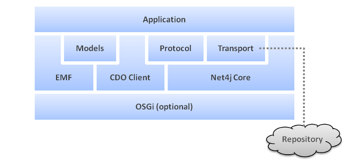
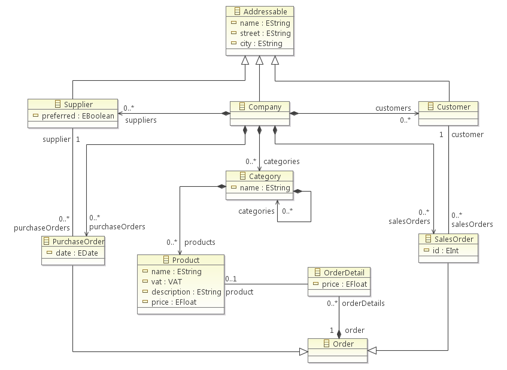

Architecture of a Client Application


Architecture of a Client Application |
|
A CDO client combines an EMF model object graph with repository-aware loading and persistence. Application code normally uses generated model interfaces and EMF APIs for domain behavior, then uses CDO APIs to connect, choose a branch or time, manage a view, commit changes, and observe repository events. The session, view, and transaction connect these levels: a session owns connection-wide services; a view loads revision data into its resource set; a transaction tracks local edits and sends them for commit. Revision managers and caches support loading and reuse, while the session protocol carries requests to the server. These managers and the transport are infrastructure; applications generally configure them through session and connector APIs instead of implementing them.
The following diagram illustrates the major building blocks of a CDO application:

CDO is distributed as OSGi bundles, but its core client and server facilities
can also run in a plain Java process. OSGi supplies bundle lifecycle, extension and service discovery, and the
shared wiring container; registrations declared by bundles are then available without
application code registering each factory. A standalone application must assemble the required
container and factories itself. Application code should usually use the public session and connector APIs rather
than depend on OSGi internals.
CDO utilizes an operations and maintenance framework to abstract common platform services such
as logging, tracing, monitoring and configuration. Without the need to depend on additional external libraries these services integrate seamlessly
with OSGi, if available at runtime, or emulate similar functionality if running stand-alone.
The Eclipse Modeling Framework is a modeling framework and code generation facility for building tools and other applications based on a structured data model. From a model specification described in XMI, EMF provides tools and runtime support to produce a set of Java classes for the model, along with a set of adapter classes that enable viewing and command-based editing of the model, and a basic editor.
The CDO client enables an application to open one or more sessions. Each session represents
a connection to a repository and provides a broad API to interact with it. A session does not
provide direct access to model instances; views or transactions are needed
to navigate or modify the model instance graph.
A session consists of several generic (network and storage independent) components, such as:
The client core separates repository behavior from transport. It sends repository operations through the
session protocol SPI; the shipped protocol uses Net4j signals. Net4j multiplexes that
protocol over a connector and transport such as in-process JVM, TCP, SSL, or WebSocket. The server receives the
connection, associates it with a server session and repository, executes repository services, and returns results
or notifications. Applications normally select/configure a supported connector and do not implement signal
indications or protocol dispatch.
A small first-application path is: open a session, create a view or transaction, load a resource, modify the model, commit through Working with Transactions, and close the owned objects. Framework-specific resource and provider integration is covered in Integrating with EMF and Other Frameworks.
See Also:
The Net4j Signaling Platform is an extensible client/server communications framework. Net4j eases the
development of fast and maintainable application protocols that are independent of the
physical transport medium. Transport protocols are pluggable and Net4j ships with support for
TCP, SSL, WS and JVM
(in-process) transport. The core of Net4j is a fast, asynchronous and non-blocking buffer
multiplexing kernel that can be initialized from OSGi or run standalone. In an in-process application the JVM
connector avoids a socket; TCP/SSL and WebSocket connectors cross a process boundary. The transport choice changes
how bytes move, while the CDO session protocol and repository operations remain the same.
See Also:
The models, usually in the form of interfaces that are generated by EMF, represent the business knowledge in an application. They define the structure (and, mostly irrelevant for CDO, the behavior) of the business entities and they're used by the generic CDO client to manage, e.g., load, commit, query, the business data.

CDO loads individual objects on demand and can unload objects that are no longer strongly reachable
under the view's cache policy. For native generated models, the model must be generated with CDO-compatible GenModel
properties; ordinary EMF models can instead be used through legacy compatibility. The model interfaces remain the
application's domain-facing types, while CDO tracks object identity and revision state.
The CDO SDK comes with a convenient migrator tool for existing GenModels and an importer tool for new GenModels.
See Also:
A concrete communications adapter, a CDOSessionProtocol implementation that operates inside the
CDO client. The only session protocol implementation that currently ships with CDO is based on
Net4j Core.
A concrete transport adapter, an IConnector implementation that operates on top of the
Net4j core. Net4j currently ships with IJVMConnector, ITCPConnector
(optionally with SSL support) and IWSConnector.
The server must be deployed and configured with the matching transport.